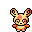

Pokédex / #327
Spinda #327
Normal
No two Spinda have the same pattern of spots. Its tottering step fouls the aim of foes.
Generation 3 · Hoenn

Stats
| Attack | 60 | |
|---|---|---|
| Defense | 60 | |
| Sp. Atk | 60 | |
| Sp. Def | 60 |
In the wild
| Wild level | 40–50 |
|---|---|
| HP | 60 |
| Experience | 10 |
| Egg groups | Field, Human-Like |
Evolution
- Does not evolve.
Moves
| Level | Move | Type | Category | Power | Energy | Cooldown | Effect | |
|---|---|---|---|---|---|---|---|---|
| 1 | Tackle | Normal | Physical | 15 | 15 | 1s | Tackle is one of the most common and basic moves a Pokemon learns. It deals damage with no additional effects. | |
| 5 | Faint Attack | Dark | Physical | 60 | 60 | 9s | Faint Attack deals damage and ignores changes to the Accuracy and Evasion stats. | |
| 10 | Psybeam | Psychic | Special | 65 | 70 | 16s | Psybeam deals damage and has a 10% chance of confusing the target. | |
| 15 | Sucker Punch | Dark | Physical | 80 | 80 | 12s | Sucker Punch deals damage and has no secondary effect. | |
| 20 | Psycho Cut | Psychic | Physical | 7 | 80 | 16s | Psycho Cut deals damage and has an increased critical hit ratio. | |
| 25 | Hypnosis | Psychic | Status | – | 80 | 60s | Hypnosis puts the target to sleep. | |
| 30 | Dream Eater | Psychic | Special | 100 | 120 | 15s | Dream Eater deals damage only on sleeping foes and the user will recover 50% of the HP drained. | |
| 35 | Psychic | Psychic | Special | 90 | 100 | 21s | Psychic deals damage and has a 10% chance of lowering the target's Special Defense by one stage. | |
| 40 | Shadow Ball | Ghost | Special | 80 | 80 | 12s | Shadow Ball deals damage and has a 20% chance of lowering the target's Special Defense by one stage. | |
| 45 | Uproar | Normal | Special | 90 | 100 | 25s | The user attacks in an uproar for three turns. During that time, no Pokemon can fall asleep. | |
| 50 | Double-Edge | Normal | Physical | 120 | 120 | 18s | Double-Edge deals damage and has no secondary effect. | |
| 55 | Thrash | Normal | Physical | 40 | 115 | 12s | The user attacks for 2-3 turns and then becomes confused. | |
| 60 | Dizzy Punch | Normal | Physical | 70 | 75 | 11s | Dizzy Punch deals damage and has a 20% chance of confusing the target. | |
| 65 | Substitute | Normal | Status | – | 200 | 120s | Creates a replacement who will take all the damage. During this the user can't use any move. | |
| 70 | Sleep Talk | Normal | Status | – | 90 | 20s | While it is asleep, the user randomly uses one of the moves it knows. |
Field abilities
StrengthRock SmashFlash
Special abilities
Own TempoTangled Feet
Egg moves
DisableEncoreFake OutFake TearsIcy WindPsycho ShiftRapid SpinRole PlaySmelling SaltsWater PulseWish
Technical machines
Brick BreakCalm MindDouble TeamDream EaterFocus PunchProtectPsychicRain DanceRestRock SlideRock TombSafeguardShadow BallShock WaveSubstituteToxic
Drops
| Item | Amount | Chance | |
|---|---|---|---|
| bunch of wheat | 1–6 | 87.5% | |
| bitten apple | 1 | 77.8% | |
| bamboo leaves | 1–3 | 70% | |
| bamboo stick | 1–3 | 70% | |
| acorn | 1 | 46.7% | |
| cookie | 1–5 | 5% | |
| red apple | 1–5 | 5% | |
| spinda doll | 1 | 0.1% | |
| Love Plate | 1 | 0.025% | |
| held silk scarf | 1 | 0.01% | |
| TM 10 | 1 | 0.005% |